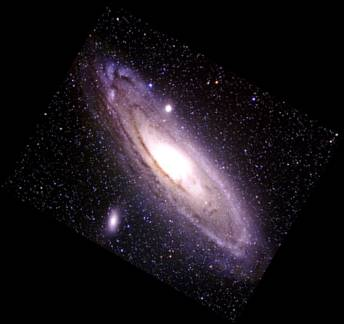
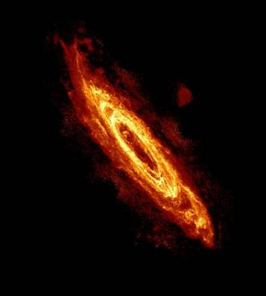

| El hidrógeno atómico en una galaxia aveces cubre mucho mas espacio o se extiende mucho mas que la distribucion de luz estelar, como podemos notar en las dos imagenes de la galaxia M31, la galaxia de Andrómeda. En las cuales la imagen de la izquierda es el disco estelar y la imagen de la derecha es el disco de hidrógeno atómico. Las imágenes se muestran más o menos a la misma escala. El disco de hidrógeno atómico es mucho mas grade que el disco de luz estelar. Nota que hay una depresión en la distribución de hidrógeno atómico en el centro de la galaxia justamente donde esta el area en donde se encuentra un gran grupo de estrellas que estan estrechamente agrupadas, el nombre formal para este área es cúmulo o "bulge". Debido a que el hidrógeno atómico, de una galaxia, se extiende mucho más lejos que la luz estelar y porque los mapas de hidrógeno atómico también producen velocidades, los campos de velocidad de hidrógeno atómico pueden ser utilizados para obtener las curvas de rotación y para trazar la distribución de la masa total de radios, mucho más allá del disco estelar. En muchas de las galaxias, la curva de rotacion de hidrógeno atómico es plana, para radios grandes, lo que implica la existencia de grandes cantidades de materia negra. |
 Imagen del disco estelar |
 Imagen obtenida de Robert Braun. La escala es la misma de la imagen óptica a la izquierda. |
 Otro ejemplo de una galaxia cuyo disco de hidrógeno atómico es mucho más grande que el disco estelar es NGC 5055;
ver Battaglia, Fraternali, Oosterloo & Sancisi
2005, A&A.
Otro ejemplo de una galaxia cuyo disco de hidrógeno atómico es mucho más grande que el disco estelar es NGC 5055;
ver Battaglia, Fraternali, Oosterloo & Sancisi
2005, A&A.